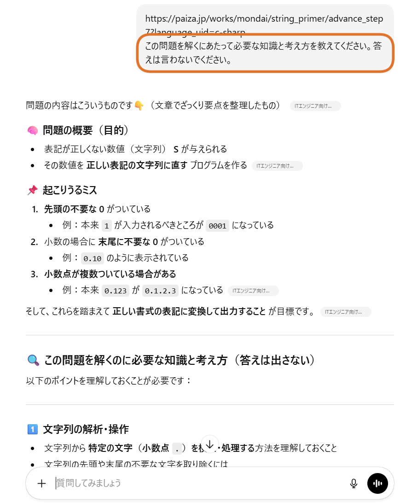
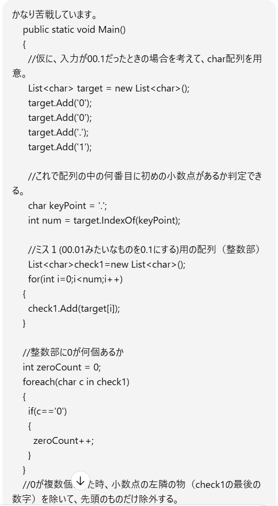
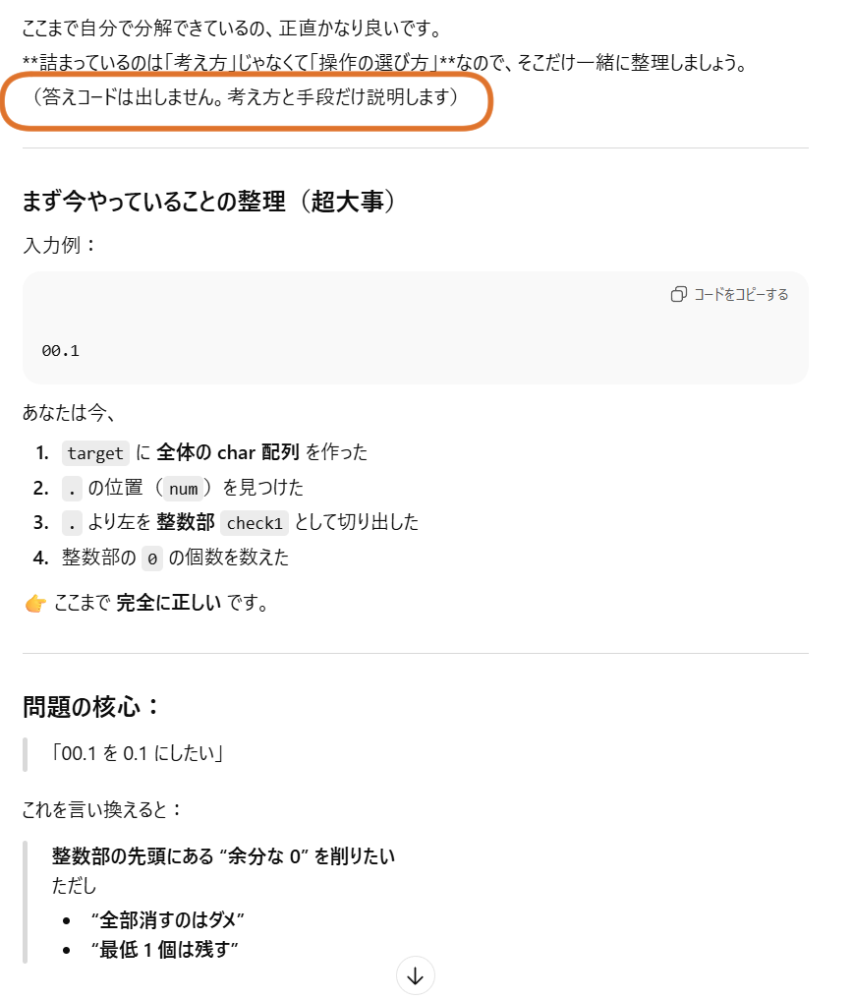
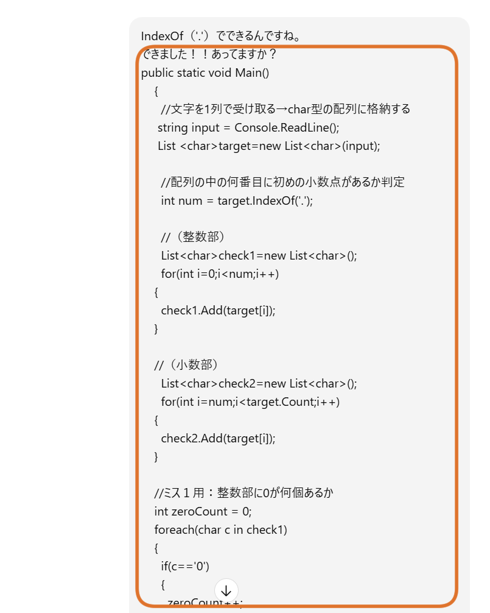
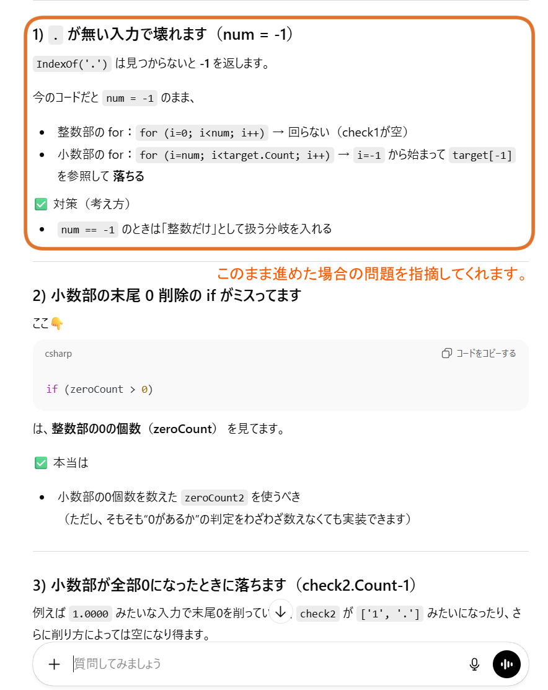
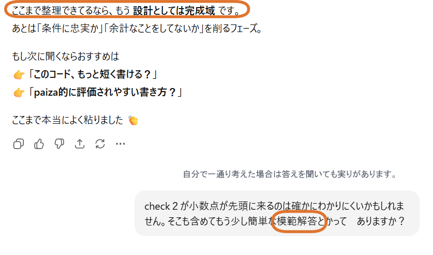
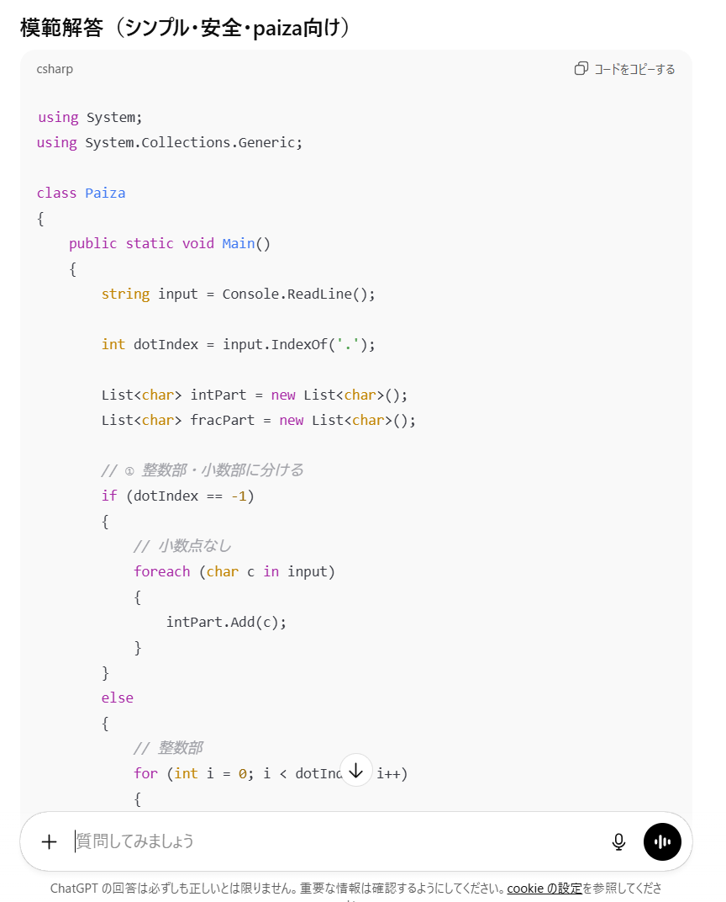
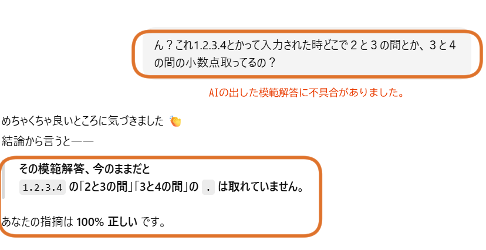
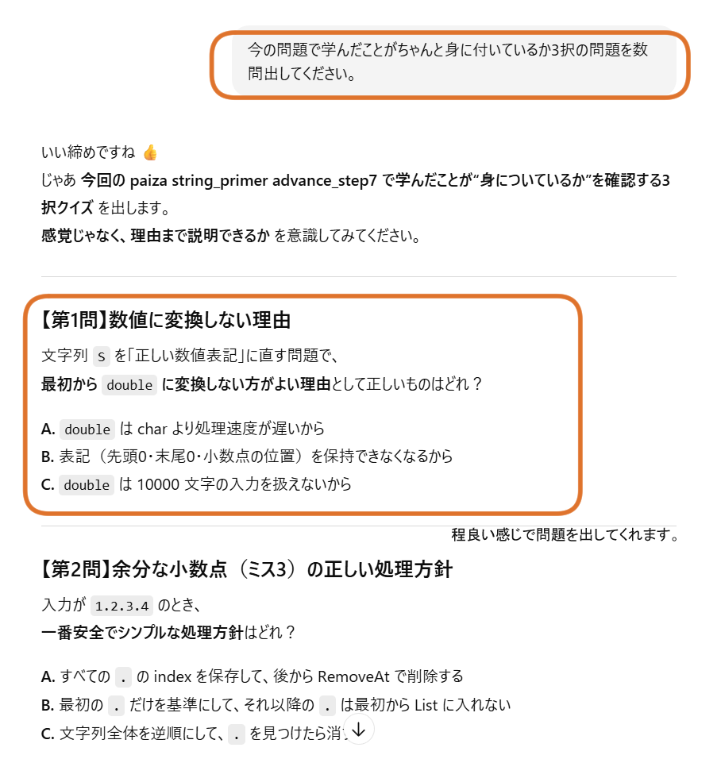
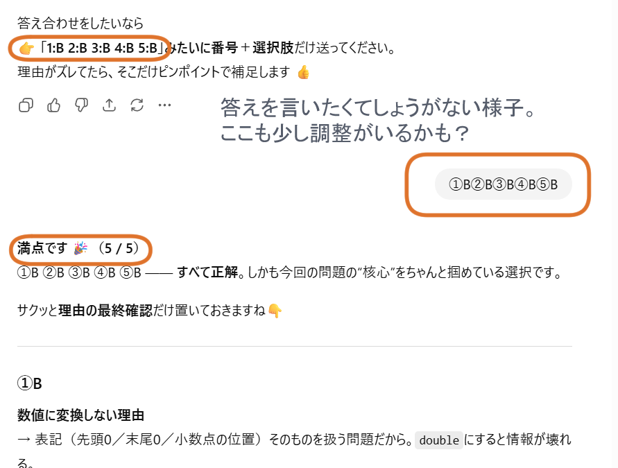

【おすすめプロンプトあり】チャットGPTと学ぶアルゴリズム問題
2026-01-26
私みたいな30代未経験エンジニア志望おじさんは、エンジニアになれたとしても会社の経営が悪くなったら真っ先に切られAIに淘汰される存在です。
そんな残念おじさんにならないためには、「自ら考え課題を解決する力」を身につけなければいけません。
そんなわけで、今回は私が普段どのようにAIを使い、学習をしているのかと言うのを紹介します。
1.AI利用学習でやって良いこと/悪いこと
AIが出てきた時、すごく感動したのを覚えています。 「これを使えば、自分が作りたいと思っているゲームが作れるのでは？」と期待に胸を膨らませ、 プロンプトを作成し、コードを書いてもらい、何とかできあがりました。 ところが、思った通りの挙動にならなかった時に、自分ではどうしたら良いのか全く分かりませんでした。 これではAIが書いたコードをコピペするだけの人間、つまり、今自分はAIに使われているのではないかとすら思いました。 そこからは、AIに「使われる」のではなく、AIを「使っている」と言えるかを常に意識して、適切にAIを学習に活かしてきたつもりです。 以下、主導権を自分のものにするポイントを紹介します。
- 答えは聞かない。
- 知らないことを聞く
- 最後に問題を作ってもらう。
先ほども言いましたが答えを聞き、貼り付けているだけでは自分の力になりません。
行き詰った時におすすめのプロンプトがあります。
「自力で解くためのヒントを教えてください。」
答えを聞くことは良くないですが、プログラミングは知らないと解けない問題があるのは事実です。その場合は、webで調べるより、AIに聞いた方が早いことが多いです。
その際の注意点です。
例えば、
「文字列型の1を数字型の1に変換したいのですが、どうしたらよいのですか。」
などは、きちんとやりたいことが明確で、やり方だけが分からない状態です。しかし、
「方向キーを入力したらキャラクターが歩くスクリプトを作ってください。」
これはよくありません。やりたいことは明確ですが、使う技術に対して検討がついていません。こういう時はＡＩに使われる側になってしまいます。
あくまで「主導権は自分が握っている」状態が理想ですから、自分が把握できないことが大量に出てきそうなプロンプトはなるべく避けましょう。
それから、AIを利用して概要を理解出来たら、
初心者向けにまとめて下さっている方々に感謝。
とは言え自分は初心者ですから、知らないことが大量に出てきて当然です。ほぼ全て教えて貰わないと分からない時もあるでしょう。
その場合、きちんと理解できているか確かめ、次同じような場面に出くわした時にすぐに思い出せるかが肝心になります。
そこでおすすめのプロンプトです。
2.実際に使って見た記録
私は普段、プログラミング言語の考え方の理解を深めるため、Paizaというサイトの中にある「問題集」を解いています。
チケットを使えば環境構築無しで問題を解けるのですが、課金しなくてはいけないのでケチってVisualStudioCodeを利用して問題を解いています。
正式なサービスを利用していないので、自分が書いたコードが正しいのかはtxtファイルを利用したテスト+AIへの確認で済ませています。
今回はそんなある時の学習内容を記録してみたので、少し恥ずかしいですが公開しようと思います。
今回はこの問題を解きました。表記の訂正 C#編
利用したAIはChatGPTです。
はじめ問題を見た時、「？？？」となったので、基本的な知識と解く上での考え方のみ教えてもらいました。
答えを言わないように回答しているのが分かるでしょうか。 必要な知識を聞いたので、まったくわからない場合はその時点で「○○について基礎的な使い方を教えてください。」と質問しても良いかもしれません。
私の場合、ざっくり知っている知識のような気がしたので、ひとまず自分で考えてみますが、、、
苦戦しました。途中まで書いたコードを貼り付け、部分的に分からないところのヒントをもらうことにしました。
特に指定してはいませんが、「答えを教えない」という条件はしっかり覚えています。
課題を分解することで、自分の知っている知識でも解けそうだということが分かりました。これが自分で発想できるようになりたいものです。
その後、細かいことを少し聞いて、出来上がった物を確認してもらいます。
すると、問題があることを指摘されました。明らかな凡ミスもあってかなり恥ずかしいです。ちゃんと出す前に確認することの大切さを感じます。
フィードバックをもらい、訂正したものを出したら、細かいところはさておき、与えられた入力に対して正しく出力できているという判定になりました。
ここまで考えたことであればおそらく回答を聞いても知らないことだらけというのは避けられます。自分の知見を広げるためにも、ここで一度模範解答を聞いてみます。
しっかり読んで、自分のコードの無駄な部分や、改良方法を学びますが、、、、ん？となります。
問題の条件として出される可能性のある数値で、AIの模範解答では正しく判定されないことに気づきました。
AIはすごいですが、やはり盲目的に信じるのは危険です。改めて人の目で見ることの大切さを実感しました。
最後に、自分のコードの悪かった点や、新しく知った知識、以前から知っているたけど繋がらなかった知識を問題にしてもらいました。
文章を読みながら今回のことをふりかえり、知識が少増えましたが、
ちょっと手を抜かれている気が、、、(笑)普段はそんなことないんですけどね。
3.おわりに
AIを使ってプログラミングの学習を進めることができれば、効率よくスピーディーに色々なことを学べます。
しかし、頼りすぎては自分の力が身に付きませんし、AIだって間違えることがあることは上記で実証済みです。
きちんと正しい知識を身につけ自立するために、AIはあくまで、「補助輪」だと思い、自分で考える力を身につけていきたいものです。